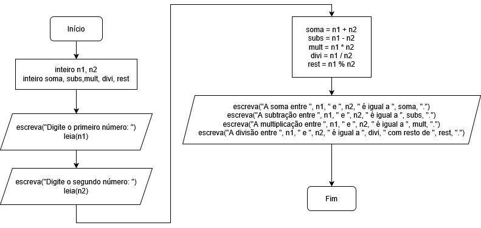

Aprenda Algoritmos
Tudo sobre Algoritmos Parte 2
Operadores Aritméticos
Os operadores aritméticos são símbolos usados para realizar contas matemáticas dentro do programa, como somar, subtrair, multiplicar e dividir valores.
No Portugol, os operadores aritméticos são praticamente os mesmos usados na matemática e em outras linguagens de programação. Sendo esses:
| Operador | Significado |
|---|---|
+ |
Soma |
- |
Subtração |
* |
Multiplicação |
/ |
Divisão |
% |
Resto da Divisão |
Veja um exemplo de programa no Portugol onde ele realiza todas essas operações:
programa {
funcao inicio() {
inteiro n1, n2
inteiro soma, subs, mult, divi, rest
escreva("Digite o primeiro número: ")
leia(n1)
escreva("Digite o segundo número: ")
leia(n2)
soma = n1 + n2
subs = n1 - n2
mult = n1 * n2
divi = n1 / n2
rest = n1 % n2
escreva("A soma entre ", n1, " e ", n2, " é igual a ", soma, ".\n")
escreva("A subtração entre ", n1, " e ", n2, " é igual a ", subs, ".\n")
escreva("A multiplicação entre ", n1, " e ", n2, " é igual a ", mult, ".\n")
escreva("A divisão entre ", n1, " e ", n2, " é igual a ", divi, " com resto de ", rest, ".\n")
}
}
PS: Note que podemos declarar mais uma variável na mesma linha, contanto que elas sejam do mesmo tipo.
Veja um fluxograma desse código acima:
Como no caso acima, a variável divi ali em cima, retorna a divisão inteira por, obviamente, ela ter sido declarada como inteiro. Para retornar um número real, declare a mesma como real. Veja um exemplo de um programa simples, onde ele analisa a nota de um aluno:
programa {
funcao inicio() {
real n1, n2, media
escreva("Digite a primeira nota: ")
leia(n1)
escreva("Digite a segunda nota: ")
leia(n2)
media = (n1 + n2) / 2
escreva("A média entre as notas é de ", media, ".\n")
}
}
Note que, no caso acima, ele fará a soma primeiro por estar dentro dos parênteses, pela ordem de precedência da matemática, tudo que estiver entre parênteses será calculado primeiro, do mais interno pro mais externo. Depois do que está dentro dos parênteses, serão feitos os cálculos das multiplicações, divisões e restos. Por último, serão feitos as somas e subtrações.
Esse é um resumo da ordem dos operadores aritméticos:
| Ordem | Operador |
|---|---|
| 1 | () |
| 2 | * / % |
| 3 | + - |
PS: Podemos inverter um valor de positivo pra negativo e vice-versa, apenas colocando um -
na frente da variável, por exemplo:
programa {
funcao inicio() {
inteiro numero = 10
inteiro negativo = -numero
escreva(negativo, "\n")
inteiro positivo = -negativo
escreva(positivo, "\n")
}
}
Assim como podemos fazer a atribuição junto com a operação matemática, veja um exemplo pra soma:
programa {
funcao inicio() {
inteiro num
escreva("Digite o número que você quer adicionar à 10: ")
leia(num)
num += 10 // É o mesmo que: num = num + 10
escreva("A soma total é ", num, ".\n")
}
}
Seguindo a mesma regra, esses são os operadores matemáticos combinados com a atribuição:
| Operador | Significado |
|---|---|
+= |
Soma com Atribuição |
-= |
Subtração com Atribuição |
*= |
Multiplicação com Atribuição |
/= |
Divisão com Atribuição |
%= |
Resto da Divisão com Atribuição |
PS: O operador += pode ser usado tanto para soma quanto para concatenação. Isso acontece porque, em muitas linguagens, o operador +
soma números e concatena cadeias de caracteres, dependendo do tipo da variável. Algumas linguagens diferenciam esses usos, como o PHP, que utiliza .
para concatenação (cujo equivalente com atribuição seria .=
) e +
apenas para soma.
Saiba também o que significa incremento e decremento em programação:
- Incrementar um número significa aumentá-lo, geralmente de 1 em 1.
- Decrementar um número significa diminuí-lo, também normalmente de 1 em 1.
Veja um exemplo simples de uso:
programa {
funcao inicio() {
inteiro i = 0
i++ // O mesmo que i = i + 1 ou i += 1
escreva(i, "\n")
i-- // O mesmo que i = i - 1 ou i -= 1
escreva(i, "\n")
}
}
Ou, de forma mais simples, incrementando/decrementando ao exibir:
programa {
funcao inicio() {
inteiro i = 0
escreva(i++, "\n")
escreva(i--, "\n")
}
}
PS: Nas linguagens oficiais, como o C e semelhantes, pode ser que o ++
e o --
tenham que vir antes da variável caso vá exibí-las, para ele fazer a operação antes de exibir a mesma, como no exemplo, seria ++i e --i. Nem todas as linguagens suportam esse operador, como o Python.
Lembrando que o Portugol não têm bibliotecas para cálculos matemáticos, como para números absolutos, raízes, potências e números aleatórios. Como também não têm outros tipos de bibliotecas comuns em outras linguagens, como pra datas e pra inversão de textos, por exemplo. Mas a maioria das linguagens têm esses recursos. E parte deles podemos criar nós mesmos dentro do Portugol, utilizando funções (que veremos mais pra frente).
Operadores Relacionais
Os operadores relacionais são usados para comparar valores. Eles sempre retornam verdadeiro ou falso.
Aqui estão os principais, de forma resumida:
| Operador Relacional | Significado |
|---|---|
== |
Igualdade. Verifica se dois valores são iguais. |
!= |
Diferente. Verifica se dois valores são diferentes. |
< |
Menor. Verifica se o valor da esquerda é menor que o da direita. |
> |
Maior. Verifica se o valor da esquerda é maior que o da direita. |
<= |
Menor ou Igual. Verifica se o valor da esquerda é menor ou igual ao da direita. |
>= |
Maior ou Igual. Verifica se o valor da esquerda é maior ou igual ao da direita. |
Veja um exemplo simples de uso:
programa {
funcao inicio() {
inteiro n1, n2
escreva("Digite o primeiro número: ")
leia(n1)
escreva("Digite o segundo número: ")
leia(n2)
escreva("Os dois números são iguais? ", n1 == n2, ".\n")
escreva("Os dois números são diferentes? ", n1 != n2, ".\n")
escreva("O primeiro número é menor do que o segundo? ", n1 < n2, ".\n")
escreva("O primeiro número é maior do que o segundo? ", n1 > n2, ".\n")
escreva("O primeiro número é menor ou igual ao segundo? ", n1 <= n2, ".\n")
escreva("O primeiro número é maior ou igual ao segundo? ", n1 >= n2, ".\n")
}
}
Esses operadores, geralmente são usados com estruturas condicionais e de repetição, que veremos mais pra frente. Note que o operador de igualdade usa dois símbolos de igual (==), já que um igual sozinho representa atribuição.
Veja um fluxograma desse código acima:

Algumas pessoas têm dificuldade pra saber qual é o símbolo de menor e qual é o de maior. Podemos usar a analogia da boca de jacaré pra saber qual é o símbolo, no exemplo, o jacaré é guloso e abre sempre a boca pro maior. Veja a imagem abaixo:

No caso acima, seria representado assim:
3 < 4
9 > 6
Outra forma de lembrar qual é o símbolo de maior e menor é pensar assim:
- A ponta do símbolo (a parte menor que parece uma setinha) sempre aponta para o número menor.
- A parte aberta (a parte maior) sempre fica voltada para o número maior.
Operadores Lógicos
Em algoritmos, os operadores lógicos são usados para combinar ou modificar expressões booleanas (lógica, ou seja, verdadeiro ou falso).
Veja um exemplo simples com o e, que só é verdadeiro quando as duas condições forem verdadeiras:
programa {
funcao inicio() {
inteiro num
escreva("Digite um número: ")
leia(num)
escreva("O número digitado é igual a 10 e é par? ", num == 10 e num % 2 == 0, ".\n")
}
}
PS: Saiba sempre que pra verificar se um número é par, verificamos se o resto dele dividido por dois é igual a zero, caso o resto seja um, ele é ímpar (por exemplo, o resto de 10 dividido por 2 é 0, o resto de 9 dividido por 2 é 1).
O mesmo código acima, só que com o ou, que é verdadeiro quando pelo menos uma das condições for verdadeira:
programa {
funcao inicio() {
inteiro num
escreva("Digite um número: ")
leia(num)
escreva("O número digitado é igual a 10 ou é par? ", num == 10 ou num % 2 == 0, ".\n")
}
}
Já o nao, apenas faz a inversão do valor lógico (ou seja, verdadeiro vira falso e falso vira verdadeiro):
programa {
funcao inicio() {
logico chovendo = verdadeiro // Experimente trocar por falso
escreva("Posso ficar sem guarda-chuva? ", nao chovendo, "\n")
}
}
As tabelas verdade
do e, ou e nao são essas:
| Operando 1 | Operando 2 | Resultado |
|---|---|---|
falso |
falso |
falso |
falso |
verdadeiro |
falso |
verdadeiro |
falso |
falso |
verdadeiro |
verdadeiro |
verdadeiro |
| Operando 1 | Operando 2 | Resultado |
|---|---|---|
falso |
falso |
falso |
falso |
verdadeiro |
verdadeiro |
verdadeiro |
falso |
verdadeiro |
verdadeiro |
verdadeiro |
verdadeiro |
| Operando | Resultado |
|---|---|
falso |
verdadeiro |
verdadeiro |
falso |